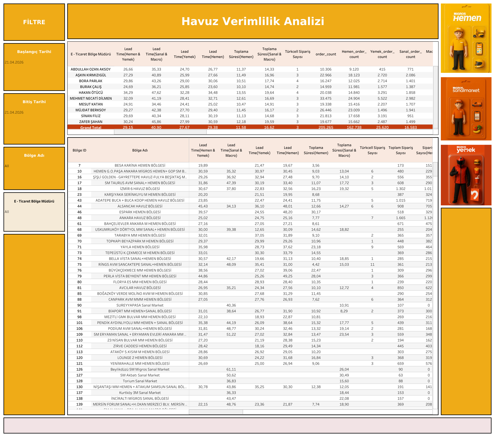

Canlı Rapora Erişin
Güncel havuz verimlilik verilerini Tableau üzerinde interaktif olarak görüntüleyin.
Dashboard Hakkında
Ne Gösterir?
Havuz Verimlilik Analizi, her E-Ticaret bölge müdürüne ait havuz operasyonlarının verimlilik metriklerini karşılaştırmalı sunar. Hemen, Yemek ve Sanal & Macro kanallarını ayrı ayrı analiz ederek zayıf noktalara hızla ulaşılmasını sağlar.
- Bölge Müdürü Bazında Analiz: Her yöneticinin sorumlu olduğu bölgelerin lead time ve toplama süresi karşılaştırması
- Çoklu Kanal Lead Time: Hemen & Yemek, Sanal & Macro ve yalnızca Hemen kanalı için ayrı lead time kolonları
- Toplama Süresi: Hemen toplama süresi ve Sanal & Macro toplama süresi bölge bazında
- Türkcell Sipariş Sayısı: Türkcell kanalına ait sipariş hacmi bölge detayında
- Bölge Bazında Özet: Bölge ID ve bölge adı ile tüm metriklerin satır satır detayı
Dashboard Önizleme

Havuz Verimlilik Analizi — Tableau